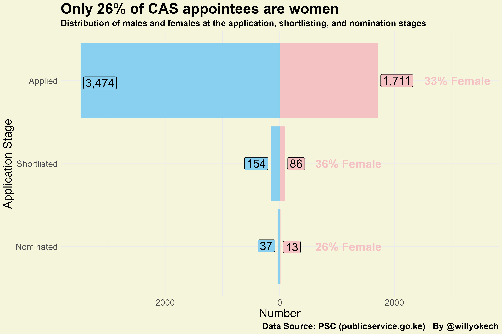
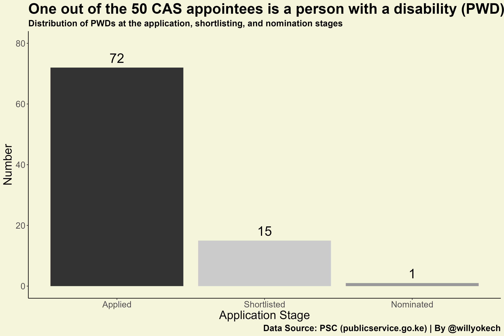
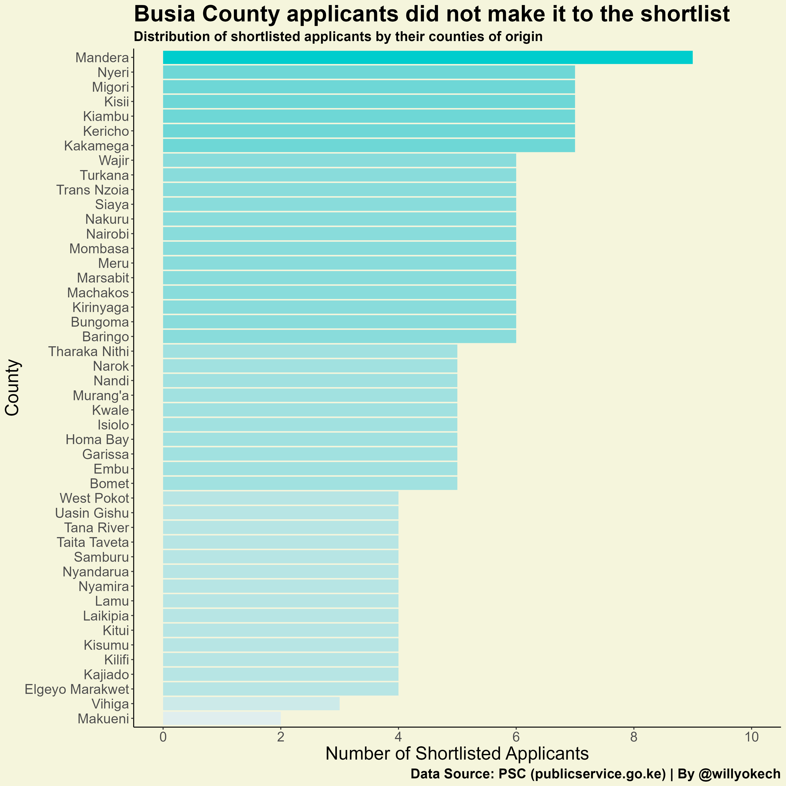
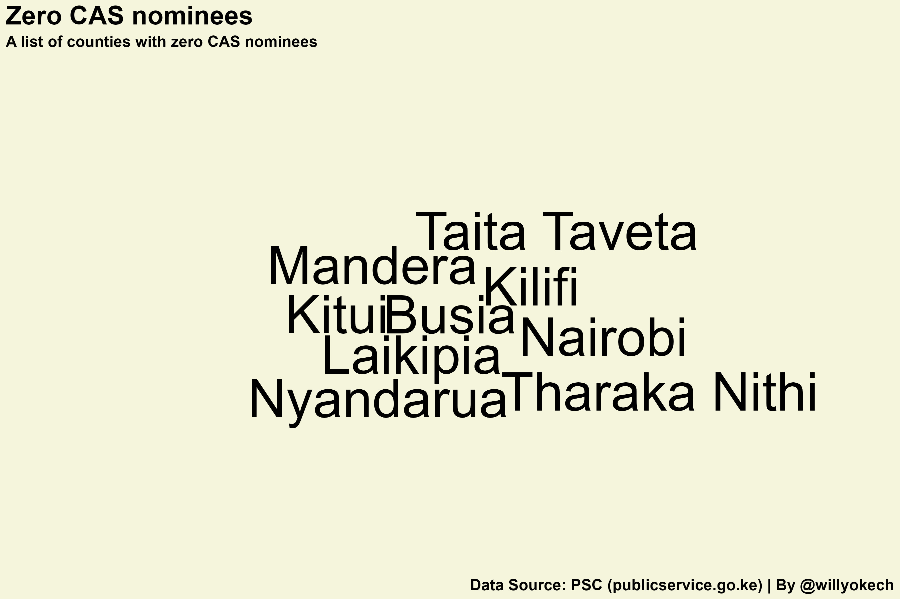
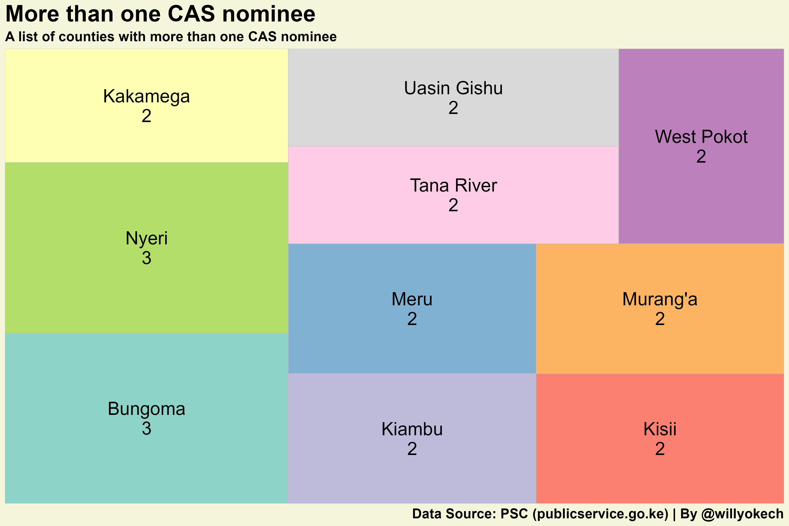
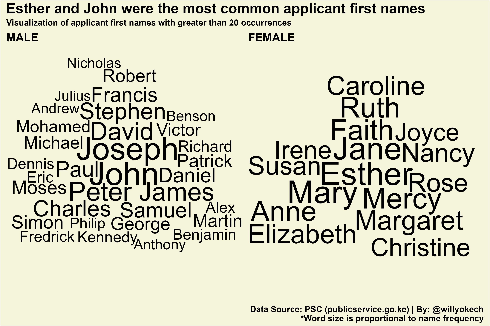

Introduction
In January 2018, former President Uhuru Kenyatta announced the creation of the Chief Administrative Secretary (CAS) position. The primary role of the appointees would be to “help the Cabinet Secretary to better coordinate the running of the affairs of the respective ministries 1.” Though highly controversial at the time (as civil society groups 2 challenged the legality of the position), the High Court (in February 2023) eventually ruled that the decision to create the new position was lawful 3.
The Public Service Commission (PSC) of Kenya is responsible for government recruitment, and Section 234 of the Constitution of Kenya states that part of its mandate includes the “establishment of public offices” and “appointment of persons to those offices.” The most recent call for applications to the CAS position was circulated in October 2022 4. Here, the PSC listed the roles, responsibilities, and requirements for all applicants. To ensure transparency in the recruitment process, the PSC provided a list of all the applicants 5, the shortlisted applicants [5], and a schedule of the interview times [5]. After the interview, the names of successful candidates were forwarded to the President for appointment. On March 16th, 2023, President William Ruto appointed fifty (50) individuals to the CAS position, which was more than double the number of positions created by the PSC. The legality of these appointments has already been challenged in court and we await the final verdict 6 7.
Controversy aside, the goal of this article is to provide a data-driven assessment of publicly available recruitment information (specifically gender, disability status, and county of origin) to determine whether principles of diversity, equity, and inclusion (DEI) were promoted during the hiring process.
Summary of Findings
- Only 26% of the CAS appointments went to women, even though 33% of applicants and 36% of those shortlisted were female. This may not be in line with the “two-thirds gender rule” outlined in Article 27(8) of the Constitution of Kenya (2010) which states that “not more than two-thirds of the members of elective or appointive bodies shall be of the same gender.”

- Two percent (2%) of the nominees were Persons with Disabilities (PWDs), which is representative of the percentage of Kenyans (at the national level) living with a disability (2.2%) 8. However, institutions such as the National Gender and Equality Commission should develop programs to increase the number of applicants from marginalized groups.

- In total, there were 133 applicants from Busia County (2.5%). Despite this, it was the only county that did not have a representative on the shortlist. To remedy this, the PSC may need to put in place affirmative action policies that ensure that at least one applicant from each county makes it to the shortlist.

- Nine counties are not represented in the final list of nominees.

- Ten counties have more than one CAS nominee.

Conclusion
Overall, this article provided a set of data visualizations to help understand the demographics of applicants for the CAS position in Kenya. Specifically, the gender, disability status, and county of origin were assessed at the applicant, shortlisting, and nomination stages. This study had several key findings:
- Less than one-third of the nominees were women even though 36% of the nominees shortlisted were female.
- Only one nominee was a person with a disability (PWD).
- One county (Busia) failed to have any applicants make it to the shortlist of 240 and nine counties in total had zero nominees out of 50.
Future work will assess the data at a more granular level and determine the counties where there were low numbers of total applicants, low numbers of women at the application and shortlisting stage, and also determine which counties did not have PWD applicants. Additionally, it would be helpful if the PSC could provide age and education level data to help perform a more thorough analysis of the recruitment process. Lastly, it is commendable that the PSC makes this information publicly available, and I hope that further analysis of the data can result in initiatives to diversify the candidate pool at the applicant and shortlisting stages.
Fun Fact
The most common applicant first names (male and female).

Footnotes
PSCU (2018) Uhuru Kenyatta’s Full Statement On New Cabinet. Available at: https://www.citizen.digital/news/uhuru-kenyattas-full-statement-on-new-cabinet-189331 (Accessed: April 2, 2023).↩︎
Betty Njeru (2018) Activist Omtatah moves to court challenging the creation of new cabinet positions. Available at: https://www.standardmedia.co.ke/kenya/article/2001267705/okiya-omtatah-moves-to-court-challenging-new-cabinet-positions (Accessed: April 6, 2023).↩︎
Correspondent (2023) Labour Court Clears Way For Appointment Of Chief Administrative Secretaries. Available at: https://www.capitalfm.co.ke/news/2023/02/labour-court-clears-the-way-for-appointment-of-chief-administrative-secretaries/ (Accessed: April 10, 2023).↩︎
PSC (2023) CALL FOR APPLICATIONS TO THE POSITION OF CHIEF ADMINISTRATIVE SECRETARY IN THE PUBLIC SERVICE. Available at: https://www.publicservice.go.ke/index.php/media-center/2/202-call-for-applications-to-the-position-of-chief-administrative-secretary-in-the-public-service (Accessed: April 10, 2023).↩︎
PSC (2023) Shortlisted Candidates. Available at: https://www.publicservice.go.ke/index.php/recruitment/shortlisted-candidates (Accessed: April 10, 2023).↩︎
Susan Muhindi (2023) Ruto’s 50 CAS nomination list challenged in court. Available at: https://www.the-star.co.ke/news/2023-03-20-rutos-50-cas-nomination-list-challenged-in-court/ (Accessed: April 2, 2023).↩︎
Emmanuel Wanjala (2023). Available at: https://www.the-star.co.ke/news/2023-03-17-ruto-has-created-27-illegal-cas-posts-lsks-eric-theuri/ (Accessed: April 5, 2023).↩︎
- Shelmith Kariuki (2020). rKenyaCensus: 2019 Kenya Population and Housing Census Results. R package version 0.0.2.